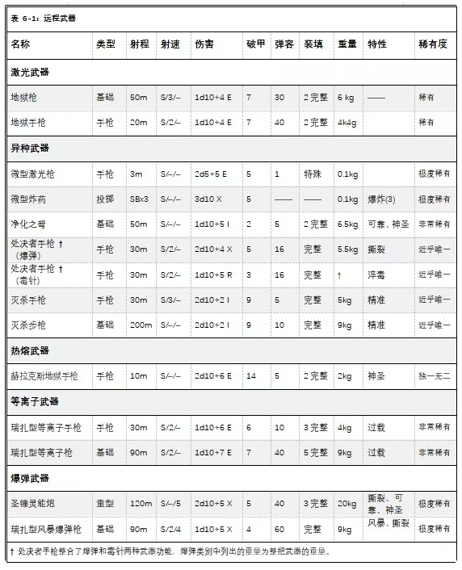
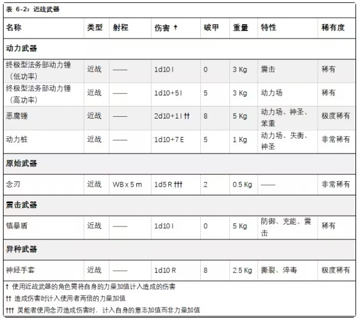

【译者：红达貘，维维豆糕（校对）】
在此感谢@巨型粉色海蛞蝓 的热心帮助！
“神皇啊，请将怒火注入这柄武器，让我向您的敌人倾泻正义之怒。”
——军务部战斗祷言
王座特工肩负着沉重的使命，需对抗穷凶极恶的帝国之敌。因此，审判庭为王座特工配备了胜任这项使命所需的武器与装备。尽管对王座特工来说，世间最精良的武器是智慧与毅力，但仅凭决心与双拳远不足以与帝国之敌抗衡。为解决这点，王座特工可以求助于卡利西斯密会的军械库（当然，是在合理范围内），从中找到各种各样的武器、护甲及其他类型的装备。
绝大多数王座特工并不在意世俗财物，但他们仍希望在一定程度上个性化自己的装备。这种个性化的通常体现是，王座特工亲自定制武器、护甲或其他装备的样式，再交由最顶尖的匠人打造。王座特工们普遍认为，在执行任务时必须使用最好的装备，而王座特工的职权也允许他们获得这样的装备。
要想定制物品，就需要王座特工委托匠人以打造专属的装备。王座特工必须进行一次 影响力检定，以找到合适的匠人并说服对方承接工作。该检定不受“持续时间”的修正影响，仅受 稀有度 的修正影响。单次检定只能定制一件物品，且每局游戏最多只能定制一件物品。根据 GM 的判断，王座特工也可以同时定制多件物品。
定制物品必须是帝国原产的武器、护甲或非消耗性装备（不可是异形科技或武器），且品质为 “极品”。若检定成功，王座特工仍需等待物品制作完成（如果是修复并改良现有物品，则需等待修复和升级完成）。制作时间的计算方式为：物品稀有度每高于 “匮乏” 一级，基础耗时增加 1d5 周；王座特工的 “影响力检定” 每获得一级成功度，则减少 1 周（最短不低于 1 周）。根据游戏内的具体情况，GM 可酌情延长或缩短这一周期。
GM 还应根据游戏内的情境，判断某件物品是否根本无法定制。例如，若玩家想要定制一把等离子手枪，那么从巢都世界的匠人那里定制几乎是不可能的——制造等离子武器的技术极为稀有，通常仅在铸造世界可用（机械教严加看管此类技术）。此时，角色要么必须前往铸造世界才能定制。但如果他已有一把品质较差的等离子手枪，可以委托巢都世界的匠人改良自己现有的武器。
神圣武器造成的伤害算作“神圣伤害”，在针对某些恶魔及亚空间生物时，神圣伤害会产生特定效果。所有带有神圣属性的武器，品质必须达到“优秀”或“极品”。
具有 “风暴” 属性的武器，对目标造成的命中次数翻倍。在武器的射速范围内，全自动射击时每获得 1 个成功度，或半自动射击时每获得 2 个成功度，都会产生 2 次命中而非 1 次（包括单发射击的情况）。此外，风暴武器的弹药消耗速度是常规武器的两倍。举个例子，一把射速为 2 的风暴武器以半自动模式射击时，会消耗 4 发弹药。
并联武器由两件相同的武器连接而成，通常只要扣动一次扳机或按下按钮即可同时开火。并联武器的设计能够让它同时向目标倾泻更多弹药，从而提高命中率。在射击时，带有 “并联” 属性的武器获得+20%命中加成，同时弹药消耗翻倍。此外，若攻击检定获得 2 个或更高成功度，该武器可额外增加 1 次命中。最后，并联武器的装填时间是常规武器的 2 倍。

审判庭的军械库中收藏着大量神秘武器。其中多是近战武器，但也有种类繁多的枪械（及类枪械武器），既有军用制式的地狱枪，也有手工打造的净化之弩。
组合武器实际上是将两种不同的武器整合到同一枪械中，为使用者提供两种不同枪械的多功能性，让使用者无需在战场上切换武器（也不用同时携带两种武器）。
每把组合武器都有一把主武器作为基底，主武器通常是激光枪、自动枪或爆弹枪。在主武器的枪管下方，悬挂着一把单发的副武器。副武器的威力通常比主武器更强，因为它只能发射一发子弹，那威力自然得足够大才行。组合热熔枪、组合等离子枪和组合榴弹发射器都是组合武器中常见的变种（组合武器的名称通常以其副武器命名）。组合武器常见于帝国卫队、修女会和阿斯塔特修会，一些更具战斗意识的王座特工也青睐这类武器，以增强自身的火力。
任意两把基础远程武器或任意两把手枪都可以组合成一把组合武器。首先要选定主武器和副武器：主武器保留各项数据（射速、弹容等），副武器的弹容则会缩减至 1 发，射速变为 S/–/–。组合后，新武器重量等于主武器的重量加上副武器重量的一半，稀有度取两者最高并在此基础上提高一个等级。至于哪些武器可以组合、哪些不能组合，最终由 GM 决定。
被称为 “地狱枪” 和 “地狱手枪” 的增强型激光武器有众多变种，通常情况下，这类武器的杀伤力和穿甲都要强于比标准的激光枪。然而，地狱武器制造条件严苛、依赖于笨重的动力背包，且可靠性较低，因此无法在帝国卫队内大规模装配。不过，地狱武器（也被称为 “过热激光武器”）仍凭借强大的威力，深受帝国风暴兵和众多王座特工的青睐。
卡利西斯风暴兵连更倾向于配备卡迪亚型地狱武器。这类地狱武器通过实战淬炼，得到了改良，足以击穿动力甲这类坚固的目标，因此在前线极受欢迎。
地狱枪的供能可以通过动力背包（参见原书第 145 页），也通过悬挂在标准野战背包下的小型电池单元。这种小型电池单元重 10kg，能为地狱枪提供表格中所列的弹容和装填时间。卡迪亚型地狱枪和地狱手枪内置瞄准器，且不受武器的单一瞄准具限制。
微型武器（或称 “微武器”）是一种特别的远程武器，外表看似戒指或其他珠宝，实则威力强大。微型武器要么是远古科技产物，要么就是出自异形之手。这类武器中通常（假设 “通常” 一词能用来形容这样的奇妙造物）由形似猿猴的异形 “太空猿猴” 打造。太空猿猴的造物工艺极为精妙，即使是神圣审判庭的王座特工，也会装配它们打造的装备。
卡利西斯密会的王座特工最青睐两种微型武器，分别是微型激光武器和微型炸药。微型激光武器通常呈戒指状，可在近战中当作手枪使用。微型炸药则会被伪装成各种珠宝的形态，通过对特定点位施加精准压力，即可启动引信，随后便可作为投掷武器。当然，这两种微型武器都有各自缺陷：微型激光武器能量储备极低，并需要花费相当长的时间来补充能量（需 1d5 小时才能再次发射），而微型炸药则是管制严苛的一次性用品，购置它们需要一笔不菲的支出。
处决者手枪是一种组合手枪，在帝国疆域内极为罕见，是帝国最危险的杀手所使用的武器（或者说，这就是它如此罕见的原因）。面如骷髅的刺客庭屠夫——艾弗森刺客，在携带既有的致命近战武器之外，配备这种武器。处决者手枪在组合武器中十分不同寻常，它并非是粗略将两种武器粗略拼在一块，而是将两支独立枪械无缝融合。处决者手枪的主体是一把爆弹手枪，枪管下方悬挂着一支毒针手枪，使用者可以自由选择应用爆弹武器的破坏力或是毒针武器的隐秘性。这种兼收并蓄的功能外加精湛的工艺，令处决者手枪在帝国特许刺客中备受青睐。
处决者手枪以尖端的神秘科技知识制造而成，配备了双稳定瞄准镜。处决者手枪的多形态握把还经过基因编码，与特定的刺客绑定。即便对手设法夺取了灭杀手枪，也无法扣动扳机。此外，处决者手枪的毒针部分使用了合成神经毒素，用于瘫痪目标。
处决者手枪既可以作为爆弹手枪发射，也可以作为毒针手枪发射，但持有者每回合只能以一种模式射击。处决者手枪的品质为 “极品”，在制造时就被设定为仅供特定个体使用。倘若想更改武器的程序设定，只有两种办法，一是需要进入刺客庭的秘密设施，但即便是神圣审判庭成员，也难以做到这点；二是通过一次地狱级（-60）的技术应用检定，以完成程序修改。此外，处决者手枪的毒针部分使用了剧毒的毒素，只要目标被子弹击中，即便子弹未对目标造成伤害，目标也必须通过一次挑战级（+0）坚韧检定，否则将承受 1d10 点伤害，该伤害无视护甲和坚韧。
处决者手枪是武器工艺的杰作，优雅而致命。在文迪卡刺客中，处决者手枪的应用场景不同于体型更大的步枪，主要是作为备用武器，应对某些少见情景，例如刺客被发现、陷入绝境或需要快速射击时。在这些情况下，处决者手枪的表现极为出色，不少文迪卡刺客都曾靠它保住性命。处决者手枪内置消音器，消音器的品质同样是 “极品” 级别。
作为文迪卡神庙的标志性武器，灭杀步枪是帝国武器锻造的巅峰之作。每一把灭杀步枪都由机械神教的锻造贤者亲手打造，并与灭杀手枪成套配备。这套灭杀武器均根据刺客的个人要求定制而成。灭杀武器内置敏锐的机魂，所使用的弹药由特殊的高重力合金制成，几乎能穿透所有已知的防护装备。所有灭杀武器都配备了消音器和分弹器，灭杀步枪还在此基础上内置了高倍瞄准镜。灭杀武器的制造品质均为“极品”级别。灭杀武器的使用者以花费部分动作装填一发子弹（通常会装填某种特殊弹药）。若使用拥有“快速装填”天赋，则可以用一个反射动作装填一发子弹。
在卡利西斯密会的黑暗历史中，有一位人物始终为世人畏敬交加——那边是卡西尔达・科格诺斯（Cassilda Cognos）。这位神秘的审判官生平成谜，世人只知道她是暴君阴谋团的创始人，并早已离世。但她的遗产无处不在，不仅是在毒蛇堡的深层数据库中，暴君阴谋团的自身运作仍反映着她的意志，卡利西斯星区各处都散落着她相关的稀有制品。
赫拉克斯地狱手枪是一款优雅与威力兼具的武器。从外观上看，它是一把古色古香的地狱手枪，枪管细长、握把雕刻精美，枪套表面上闪烁着永不熄灭的火焰。赫拉克斯地狱手枪采用的制造技术奇特而神秘，喷射出的灼热火焰甚至超越了最强大的热熔武器——据说，这火焰的温度足以灼烧人的灵魂。
赫拉克斯地狱手枪可无视立场护盾提供的防御，以及所有灵能带来的保护效果（包括闪避加成、专门减少能量伤害或热熔武器伤害的灵能等）。此外，若目标被赫拉克斯地狱手枪击中后未死亡，则必须进行一次挑战级（+0）意志检定。若检定失败，目标的意志将永久减少 1d10 点。
赫拉克斯地狱手枪使用地狱手枪的标准弹药，且制造品质为 “极品”。
圣锤灵能炮是一种威力强大的武器，通常为圣锤修会专用。它的外形与神圣爆弹枪相似，但发射的弹药充盈着灵能能量，弹头以银制成并刻有仪式铭文，后端装填稀有的同位素炸药。每一发受祝的灵能炮弹都能精准穿透目标的灵能防御，因此，圣锤灵能炮成为了审判官猎杀恶魔或巫师时的首选武器。此外，强大的灵能者可将自身的灵能力量注入每发子弹，让每次射击都能给目标带来毁灭性打击。但灵能炮极为稀有，每一把灵能炮都由工匠大师手工打造，整个锻造过程都处于国教和神圣审判庭的监督之下，并加以祝圣。
灵能炮的弹药可无视所有灵能带来的保护效果（包括闪避加成等），以及 “恶魔” 特性带来的坚韧加成。圣锤灵能炮还内置了悬浮技术，使用者等同于拥有 “稳健肌肉” 天赋。此外，拥有灵能等级的人可灌注灵能炮，从而额外提高灵能炮的伤害，数值等同于使用者的灵能等级。灌注灵能炮视作一个阈值为 10 的次要灵能，可以自由动作使用。
灵能炮的制造品质均为 “优秀”，规则已体现这一点。
弹药：灵能炮使用手工制造的爆弹弹药，稀有度为 “极度稀有”。
一把简易的十字弩能将一根经过三重祝福的沉重箭头射入恶魔或异端的心脏，长久以来，猎巫人们都将这种武器视作自己的象征。也正是基于这种想法，一些审判官委托技艺精湛的匠人将十字弩这种原始武器改造成了更为致命的杀器。
净化之弩看起来像是爆弹枪与十字弩的融合体，但发射威力远超霰弹枪的射击。真正堪称奇迹的是它的弹药：由沉重木材与白银制成的箭桩，上面刻有专门用于阻断亚空间联系的符文。
若净化之弩造成至少 1 点伤害，箭桩就会嵌入目标体内。若没有适当的医疗护理和操作设施（例如在战场上），拔除箭桩需要 1 个完整动作，且会对目标造成 1d5+1 点伤害，该伤害无视护甲盒坚韧。
拥有“恶魔 ”特性的生物，即便它通常无需进行亚空间不稳定检定，只要体内留有净化之弩箭桩，每一轮都必须进行一次亚空间不稳定检定（详见《黑暗异端规则书》第 333 页），且承受-10 的惩罚。任何拥有灵能等级的生物，只要体内嵌有净化之弩箭桩，在施展灵能时，所有阈值都会增加 20。净化之弩的品质始终为“优秀”，规则已体现这一点。
弹药：神圣箭桩必须手工制作。一个箭袋装有 20 支箭桩，稀有度为 “非常稀有”。
铸造世界瑞扎为帝国武装力量生产的等离子武器，远优于为纨绔子弟、宪章船长及其他平民制造的同类武器。瑞扎型武器设计有更大容量的氢燃料瓶，增强后的控制系统让武器能够以更快射速射击。更重要的是，瑞扎型武器还融入了 “过载模式” 的设计。
瑞扎型等离子手枪深受帝国各武装组织的青睐。帝国卫队和阿斯塔特修会的中高阶军官常携带这种武器，偶尔也会配发给需要便携重火力的精英部队。
瑞扎型等离子枪稀有且珍贵，帝国卫队的风暴兵是少数能稳定获取这类武器的部队。在这类部队中，瑞扎型等离子枪被视作一种能高效摧毁重甲目标和轻型车辆的单兵利器。
风暴武器源于一项实验，即将多件武器组合以更快射击。瑞扎型风暴爆弹枪将两支爆弹枪连接为一件武器，单次连射即可撕碎大多数敌人。这类遗物武器在阿斯塔特修会之外极为罕见，风暴爆弹枪的表面通常刻有经文，贴有纯洁印记，彰显着它们的古老起源。
军用等离子武器有两种射击模式：常规模式和过载模式。在过载模式下，军用等离子武器能发射更高温度的等离子束，射程更远，能在更长距离上造成更高的伤害。但弊端在于，以过载模式射击会暂时耗尽等离子储备，需要短暂的充能时间才能再次射击。
在使用军用等离子武器时，使用者每回合可以自由动作在常规模式与过载模式中切换。处于常规模式时，等离子武器按既定参数运行；处于过载模式时，等离子武器射程增加 10 米，伤害增加 1d10，破甲增加 2。若武器具备“爆炸”属性，爆炸范围也会增加 2。不过，每一发过载模式的射击会消耗 3 发弹药，且在以最大功率模式射击后，等离子武器会获得 “充能” 特性（注：武器一旦以过载模式射击，即便切换回常规模式，下一轮也必须进行充能）。

在与邪恶势力、异端分子和异形长期作战的历史中，审判庭发现，最可靠的武器往往是朴实无华的剑或锤，而非那些外观唬人、噪音巨大、依赖弹药且易出故障的枪械。不过，在审判庭的军械库中，几乎没有哪种近战武器是真的“朴实无华”。
法务部的动力锤既是武器，也是一种烙印在罪犯脑海中的象征。普通仲裁员使用简单的震击锤即可满足需求，而资深监察官或令人畏惧的仲裁官则更倾向于使用威力远超前者的动力锤。
动力锤是一种多功能单手武器，设有两个功率档位。在低功率下，锤头释放的电击就足以击晕（有时甚至会杀死）目标，功能与普通震击锤相同；在高档位时，锤头会形成噼啪作响的能量场，一视同仁地击碎钢铁、护甲和肉体。
使用者每回合可通过一次自由动作切换动力锤的档位。
恶魔锤不仅仅是强大的传奇武器，当它在审判官时，它便是圣锤修会的标志性象征。恶魔锤是大型双手锤，由人类远古时期的稀有矿石和复合材料制成。锤柄布满六芒星护符和防护咒文，锤头则刻有燃烧的审判庭徽记，徽记周围散发着噼啪作响的能量场。
恶魔锤极为稀有，仅授予恶魔审判庭中最德高望重的审判官。尽管具体数量不详，但有传言称卡利西斯密会拥有的恶魔锤数量极少。该星区现存的恶魔锤可能只有传说中的 “十二远征恶魔锤”，据说曾由十二议会持有。这些英勇的恶魔猎手曾在安茹远征的前线浴血奋战，如今，他们的武器成了密会高级成员竞相渴求的珍宝。
据说，“十二远征恶魔锤”实际上共有 13 柄，但其中一柄早已落入大敌之手中，不知所踪。若此事属实，能将这把恶魔锤带回神圣审判庭的人，必然会为整个审判庭所赞扬。
在使用恶魔锤对抗具有 “恶魔” 特性的生物时，伤害骰结果为 8-10 点时，即可触发“正义之怒”，而非常规情况下 10 点伤害骰。
此外，恶魔锤始终属于“极品”品质的武器，为使用者的武器技能检定提供 + 10 加成，且所有伤害骰结果 + 1。该伤害加成已包含在武器的参数设定中。
真正的遥感灵能者不屑于平庸的非灵能“钝器”，而是偏好一种更为优雅、隐蔽的武器——念刃。在合适的灵能操控下，这种武器能相当致命。
从外观上看，念刃近似于一把没有刀柄的双刃剑。念刃纤细而坚固，两端逐渐收窄成针尖状，这使得非灵能者根本无法拿起并使用它。在锋利的合金外层之下，念刃内嵌有灵能活性材料，能让使用者更加灵活自如地控制念刃。训练有素的使用者能随意操纵念刃，让它们仿佛有自我意识般飞舞、盘旋、劈砍。
要使用念刃，使用者必须施展任何可以抬起并移动物体的灵能（例如“神奇之手”“凶猛投掷”“心灵传感”“念动御物”）。灵能的施展方式与常态相同，但效果变更为激活数量等于使用者灵能等级一半（向上取整）的念刃。若想在多个回合中持续操控这些刃片，使用者必须维持该灵能。